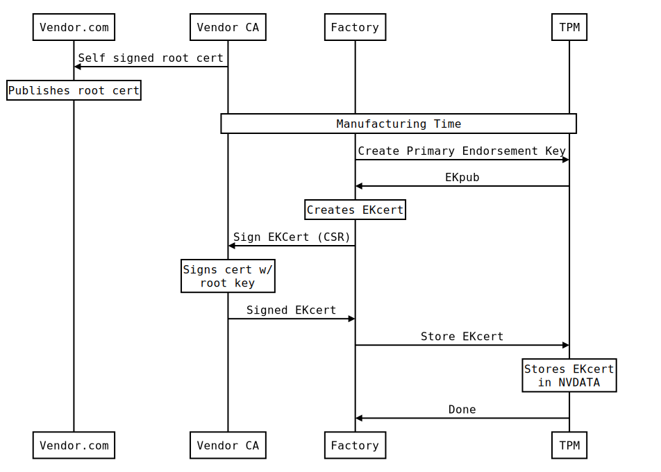
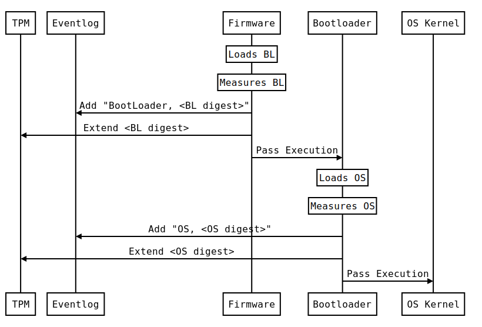
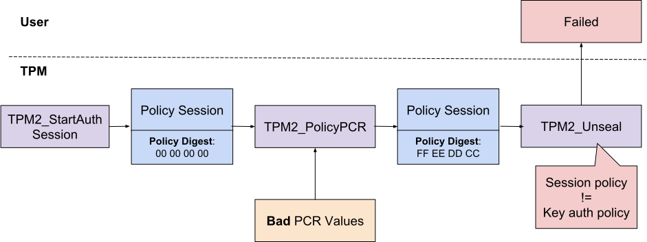

Welcome
TPM-JS lets you experiment with a software Trusted Platform Module (TPM) in your browser. TPM-JS includes the following libraries:
- Intel TPM2 Software Stack (TSS).
- IBM software TPM simulator.
- Google BoringSSL.
The TSS library provides high-level APIs to the TPM. It manages TPM resources, marshals command buffers and unmarshals response buffers.
The simulator executes TPM commands. It maintains internal state and uses the BoringSSL library for cryptographic operations.

TPMs are remarkable! They are passive, low-end devices that offer strong security guarantees.
In this site we'll learn how TPMs work. We'll see how to use the TPM as a cryptographic device. We'll cover topics such as key generation, measured boot, PCRs, remote attestation and key sealing.
Introduction
TPM is a discrete device soldered on the motherboard. It is a cheap (costs less than a dollar to manufacture), low-end device that communicates with the main CPU over a slow, low-bandwidth channel.
TPM is a passive device: it doesn't monitor the system and it can't halt CPU execution. For it to work, it must be fed data.
TPM has limited storage for runtime state and persistent data: its non-volatile storage is about 64KB in size. TPM can only hold a limited number of objects at the same time. For this reason, a dedicated software layer on the host (resource manager) loads and unloads session objects at runtime.
TPM command execution is single-threaded: it executes one command at a time. Commands cannot be queued or batched together - each command must wait for the currently running command to finish. Note that command execution can be canceled.
Despite these unfavorable conditions, the TPM is designed to support critical security workflows. TPMs support two main use-cases: secure key generation and remote system attestation.
Secure Key Generation
TPM is a cryptographic device. It can securely generate new cryptographic keys:
the keys are only available to the TPM - private key material never leaves the device in plain form.
TPM can do crypto operations such as encryption and signing. TPM can certify
new keys, so in a way a TPM acts as a certificate authority (CA). Trust in these
keys is rooted in a primary key provisioned by the manufacturer or the owner
of the TPM.
Remote System Attestation
TPM can capture the host system state: this is done by storing a sequence of measurements in a special set of registers called Platform Configuration Registers (PCRs). The TPM can later report its PCR values to a remote party. It is done in a secure way such that the remote attester can verify the report is fresh, genuine, and has not been tampered with.
TPM Properties
TPM properties can be queried using the TPM2_CC_GetCapability command
with TPM2_CAP_TPM_PROPERTIES argument.
The following snippet reads the TPM specification level (1.46) and the
manufacturer id ("IBM ").
app.GetTpmProperties();
To test whether a particular algorithm is implemented by the TPM, use the TPM2_CC_TestParms command.
The following snippet calls TPM2_CC_TestParms with TPM2_ALG_HMAC and different hash algorithms. SHA1, SHA256 are both implemented
by the TPM.
SHA512, however, is not.
assert(app.TestHashParam(TPM2_ALG_SHA1) == TPM2_RC_SUCCESS, 'SHA1 is implemented');
assert(app.TestHashParam(TPM2_ALG_SHA256) == TPM2_RC_SUCCESS, 'SHA256 is implemented');
assert(app.TestHashParam(TPM2_ALG_SHA512) != TPM2_RC_SUCCESS, 'SHA512 is not implemented');
print('OK');
Random Bytes
As a dedicated cryptographic device, the TPM can generate secure random data. Use
TPM2_CC_GetRandom to generate random bytes.
app.GetRandom(10);
Note that a single call can generate at most 48 bytes, the size of the largest
hash digest implemented by the TPM (TPM2_ALG_SHA384 in this case).
assert(app.GetRandom(100).length == 48, 'Max number of random bytes');
print('OK');
Cryptographic Keys
TPM generates strong, secure cryptographic keys. Strong in the
sense that the key is derived from true random source and large key space. In
case of 3DES, TPM also checks that keys are not known weak keys. Secure in the
sense that the private key material never leaves the TPM secure boundary in plain
form. When a key leaves the TPM - in order to be loaded and used later - it is
wrapped (encrypted) by its parent key.
Keys, therefore, form a tree: each key is wrapped by its parent,
all the way to the root of the tree, where the primary key is derived
from a fixed seed. The seed is stored in the TPM's NVDATA, under a reserved
index, and cannot be read externally.

Key Hierarchies
The TPM stores keys on one of four hierarchies:
- Endorsement hierarchy.
- Platform hierarchy.
- Owner hierarchy, also known as storage hierarchy.
- Null hierarchy.
Generally speaking, the endorsement hierarchy is reserved for objects created and certified by the TPM manufacturer. The endorsement seed (eseed) is randomly generated at manufacturing time and never changes during the lifetime of the device. The primary endorsement key is certified by the TPM manufacturer, and because its seed never changes, it can be used to identify the device. Since there's only one TPM device per machine, the primary endorsement key can also be used as the machine's identity.
The platform hierarchy is reserved for objects created and certified by the OEM that builds the host platform. The platform seed (pseed) is randomly generated at manufacturing time, but can be changed by the OEM by calling
TPM2_CC_ChangePPS.
The owner hierarchy is reserved for us - the primary users of the TPM. When a user takes ownership, for example, when the IT department provisions a new host on the network, the owner hierarchy is reset. This is done by calling
TPM2_CC_Clear. In this critical setup step, two user keys should
be provisioned and certified by the owner: these form the root of trust for all
the keys generated on the owner hierarchy.
The null hierarchy is reserved for ephemeral keys. The null seed is re-generated each time the host reboots.
Let's see this in action. First, open the Seeds window by either clicking on
the View menu on the right, or by running the next snippet.
ShowSeedsWindow();
Note the seed values. We simulate a host reset (power-off, power-on cycle) in the next snippet. Note how the null seed is re-generated.
var before = sim.GetNullSeed();
app.Shutdown();
sim.PowerOff();
sim.PowerOn();
app.Startup();
var after = sim.GetNullSeed();
assert(_.isEqual(before, after) == false, 'nseed reset on reboot');
print('OK');
We clear the owner hierarchy in the next snippet. Note how the owner seed is re-generated.
var before = sim.GetOwnerSeed();
app.Clear();
app.Shutdown();
sim.PowerOff();
sim.PowerOn();
app.Startup();
var after = sim.GetOwnerSeed();
assert(_.isEqual(before, after) == false, 'oseed reset on clear');
print('OK');
Again,
TPM2_CC_Clear should only be called when the user takes ownership of the TPM.
Finally, we simulate a manufacturer reset. Note how all the seeds are re-created.
var before = sim.GetEndorsementSeed();
sim.PowerOff();
sim.PowerOn();
sim.ManufactureReset();
sim.PowerOff();
sim.PowerOn();
app.Startup();
var after = sim.GetEndorsementSeed();
assert(_.isEqual(before, after) == false, 'eseed reset on clear');
print('OK');
A manufacturer reset cannot be triggered by the user. Here we use our direct access to the simulator in order to invoke this function.
Primary Keys
As mentioned, primary keys are derived from the primary seeds using a deterministic key derivation function (KDF). More accurately, the KDF takes as input the fixed seed and the key's template that describes its properties.

The template is defined in the TPM2B_PUBLIC structure. Important
fields include the type that describes whether this is a symmetric or
asymmetric key, the objectAttributes that describes whether the key is
used for encryption or signing, the parameters that describes the key
size and unique that is used as an entropy value.
A primary key is created with the TPM2_CC_CreatePrimary command.
Let's create a RSA-2048 key on the OWNER hierarchy:
app.CreatePrimary(TPM2_RH_OWNER, TPM2_ALG_RSA,/*restricted=*/1, /*decrypt=*/1, /*sign=*/0, /*unique=*/'hello');
TPM2_CC_FlushContext to unload an object.
// Create primary key.
var pk1 = app.CreatePrimary(TPM2_RH_OWNER, TPM2_ALG_RSA,/*restricted=*/1, /*decrypt=*/1, /*sign=*/0, /*unique=*/'hello');
assert(pk1.rc == TPM2_RC_SUCCESS, 'CreatePrimary failed');
// Unload primary key.
assert(app.FlushContext(pk1.handle) == TPM2_RC_SUCCESS, 'FlushContext failed');
// Create primary key with the same template. The same key is created.
var pk2 = app.CreatePrimary(TPM2_RH_OWNER, TPM2_ALG_RSA,/*restricted=*/1, /*decrypt=*/1, /*sign=*/0, /*unique=*/'hello');
assert(pk2.rc == TPM2_RC_SUCCESS, 'CreatePrimary failed');
// Compare public key material.
assert(_.isEqual(pk1.rsa_public_n, pk2.rsa_public_n) == true, 'Keys should match');
// Unload primary key.
assert(app.FlushContext(pk2.handle) == TPM2_RC_SUCCESS, 'FlushContext failed');
print('OK');
Instead of comparing the public key material (rsa_public_n which is copied from out_public.publicArea.unique.rsa.buffer), we should instead compare the key's name. The name, defined in
TPM2B_NAME structure is the hash of the
canonical form of TPM2B_PUBLIC that describes the key's attributes, parameters
and public key material.
// Create primary key.
var pk1 = app.CreatePrimary(TPM2_RH_OWNER, TPM2_ALG_RSA,/*restricted=*/1, /*decrypt=*/1, /*sign=*/0, /*unique=*/'hello');
assert(pk1.rc == TPM2_RC_SUCCESS, 'CreatePrimary failed');
// Unload primary key.
assert(app.FlushContext(pk1.handle) == TPM2_RC_SUCCESS, 'FlushContext failed');
// Create primary key with the same template. The same key is created.
var pk2 = app.CreatePrimary(TPM2_RH_OWNER, TPM2_ALG_RSA,/*restricted=*/1, /*decrypt=*/1, /*sign=*/0, /*unique=*/'hello');
assert(pk2.rc == TPM2_RC_SUCCESS, 'CreatePrimary failed');
// Compare names.
assert(_.isEqual(pk1.name, pk2.name) == true, 'Keys should match');
// Unload primary key.
assert(app.FlushContext(pk2.handle) == TPM2_RC_SUCCESS, 'FlushContext failed');
print('OK');
The owner's seed doesn't change after a host restart, therefore, the primary key doesn't change after a restart:
// Create primary key.
var pk1 = app.CreatePrimary(TPM2_RH_OWNER, TPM2_ALG_RSA,/*restricted=*/1, /*decrypt=*/1, /*sign=*/0, /*unique=*/'hello');
assert(pk1.rc == TPM2_RC_SUCCESS, 'CreatePrimary failed');
// Restart host.
app.Shutdown();
sim.PowerOff();
sim.PowerOn();
app.Startup();
// Create primary key with the same template. The same key is created.
var pk2 = app.CreatePrimary(TPM2_RH_OWNER, TPM2_ALG_RSA,/*restricted=*/1, /*decrypt=*/1, /*sign=*/0, /*unique=*/'hello');
assert(pk2.rc == TPM2_RC_SUCCESS, 'CreatePrimary failed');
// Compare names.
assert(_.isEqual(pk1.name, pk2.name) == true, 'Keys should match');
// Unload primary key.
assert(app.FlushContext(pk2.handle) == TPM2_RC_SUCCESS, 'FlushContext failed');
print('OK');
Let's see how different keys are created if different template entropy values are used:
// Create keys with different entropy values.
var entropy1 = 'hello';
var pk1 = app.CreatePrimary(TPM2_RH_OWNER, TPM2_ALG_RSA,/*restricted=*/1, /*decrypt=*/1, /*sign=*/0, entropy1);
assert(pk1.rc == TPM2_RC_SUCCESS, 'CreatePrimary failed');
var entropy2 = 'world';
var pk2 = app.CreatePrimary(TPM2_RH_OWNER, TPM2_ALG_RSA,/*restricted=*/1, /*decrypt=*/1, /*sign=*/0, entropy2);
assert(pk2.rc == TPM2_RC_SUCCESS, 'CreatePrimary failed');
// Unload keys
assert(app.FlushContext(pk1.handle) == TPM2_RC_SUCCESS, 'FlushContext failed');
assert(app.FlushContext(pk2.handle) == TPM2_RC_SUCCESS, 'FlushContext failed');
// Compare keys.
assert(_.isEqual(pk1.name, pk2.name) == false, 'Keys should be different');
print('OK');
Finally, let's see how different keys are created if different seed values are used. We'll use the null hierarchy for this experiment. We'll reboot the host platform between key creation:
// Create keys with different seed values. This shows that null hierarchy stores ephemeral keys.
var pk1 = app.CreatePrimary(TPM2_RH_NULL, TPM2_ALG_RSA,/*restricted=*/1, /*decrypt=*/1, /*sign=*/0);
assert(pk1.rc == TPM2_RC_SUCCESS, 'CreatePrimary failed');
// Restart host. The null seed is re-generated.
app.Shutdown();
sim.PowerOff();
sim.PowerOn();
app.Startup();
var pk2 = app.CreatePrimary(TPM2_RH_NULL, TPM2_ALG_RSA,/*restricted=*/1, /*decrypt=*/1, /*sign=*/0);
assert(pk2.rc == TPM2_RC_SUCCESS, 'CreatePrimary failed');
assert(app.FlushContext(pk2.handle) == TPM2_RC_SUCCESS, 'FlushContext failed');
// Compare keys.
assert(_.isEqual(pk1.name, pk2.name) == false, 'Keys should be different');
print('OK');
Object Attributes
Object attributes bitmap field is part of TPM2B_PUBLIC. For our
experiments it's important to understand the following attributes:
- Decrypt (TPMA_OBJECT_DECRYPT). Specifies an encryption key.
- Sign (TPMA_OBJECT_SIGN_ENCRYPT). Specifies a signing key.
- Restricted (TPMA_OBJECT_RESTRICTED). Restricts the key to signing/encrypting only internal TPM data.
The ultimate parent at the top of the hierarchy is a primary key. Children can be storage keys, in which case they can also be parents. Children can also be non-storage keys, in which case they're leaf keys: children but never parents.
// A key must be either an encryption or a signing key.
var key = app.CreatePrimary(TPM2_RH_OWNER, TPM2_ALG_RSA,/*restricted=*/0, /*decrypt=*/0, /*sign=*/0);
assert(key.rc == TPM2_RC_P + TPM2_RC_2 + TPM2_RC_ATTRIBUTES, 'CreatePrimary expected to fail');
var key = app.CreatePrimary(TPM2_RH_OWNER, TPM2_ALG_RSA,/*restricted=*/1, /*decrypt=*/0, /*sign=*/0);
assert(key.rc == TPM2_RC_P + TPM2_RC_2 + TPM2_RC_ATTRIBUTES, 'CreatePrimary expected to fail');
// A restricted key cannot be used for both encryption and signing.
var key = app.CreatePrimary(TPM2_RH_OWNER, TPM2_ALG_RSA,/*restricted=*/1, /*decrypt=*/1, /*sign=*/1);
assert(key.rc == TPM2_RC_P + TPM2_RC_2 + TPM2_RC_ATTRIBUTES, 'CreatePrimary expected to fail');
// A storage key is a restricted encryption key.
var key = app.CreatePrimary(TPM2_RH_OWNER, TPM2_ALG_RSA,/*restricted=*/1, /*decrypt=*/1, /*sign=*/0);
assert(key.rc == TPM2_RC_SUCCESS, 'CreatePrimary failed');
assert(app.FlushContext(key.handle) == TPM2_RC_SUCCESS, 'FlushContext failed');
// Restricted signing keys are used for PCR quotes and key certificates.
var key = app.CreatePrimary(TPM2_RH_OWNER, TPM2_ALG_RSA,/*restricted=*/1, /*decrypt=*/0, /*sign=*/1);
assert(key.rc == TPM2_RC_SUCCESS, 'CreatePrimary failed');
assert(app.FlushContext(key.handle) == TPM2_RC_SUCCESS, 'FlushContext failed');
// General purpose RSA signing key. This is a leaf-key.
var key = app.CreatePrimary(TPM2_RH_OWNER, TPM2_ALG_RSA,/*restricted=*/0, /*decrypt=*/0, /*sign=*/1);
assert(key.rc == TPM2_RC_SUCCESS, 'CreatePrimary failed');
assert(app.FlushContext(key.handle) == TPM2_RC_SUCCESS, 'FlushContext failed');
// General purpose ECC signing key. This is a leaf-key.
var key = app.CreatePrimary(TPM2_RH_OWNER, TPM2_ALG_ECC,/*restricted=*/0, /*decrypt=*/0, /*sign=*/1);
assert(key.rc == TPM2_RC_SUCCESS, 'CreatePrimary failed');
assert(app.FlushContext(key.handle) == TPM2_RC_SUCCESS, 'FlushContext failed');
// General purpose symmetric key for encryption/decryption. This is a leaf-key.
var key = app.CreatePrimary(TPM2_RH_OWNER, TPM2_ALG_SYMCIPHER,/*restricted=*/0, /*decrypt=*/1, /*sign=*/1);
assert(key.rc == TPM2_RC_SUCCESS, 'CreatePrimary failed');
assert(app.FlushContext(key.handle) == TPM2_RC_SUCCESS, 'FlushContext failed');
print('OK');
Child Keys
Non primary keys are created with the TPM2_CC_Create command. The command
takes as input a handle to the parent key, and the key's TPM2B_PUBLIC template.
pk = app.CreatePrimary(TPM2_RH_OWNER, TPM2_ALG_RSA,/*restricted=*/1, /*decrypt=*/1, /*sign=*/0, /*unique=*/'');
key = app.Create(pk.handle, TPM2_ALG_RSA,/*restricted=*/1, /*decrypt=*/1, /*sign=*/0);
assert(key.rc == TPM2_RC_SUCCESS, 'Create failed');
assert(_.isEqual(key.parent_name, pk.name) == true, 'Parent name should match');
print('tpm2b_private: ', StdVectorToByteArray(key.tpm2b_private));
print('tpm2b_public: ', StdVectorToByteArray(key.tpm2b_public));
TPM2B_PRIVATE which is the key material wrapped (encrypted) by the
parent key. Use TPM2_CC_Load to load the key onto the TPM.
// Loading a key under the same parent succeeds.
var loaded_key = app.Load(pk.handle, key.tpm2b_private, key.tpm2b_public);
assert(loaded_key.rc == TPM2_RC_SUCCESS, 'Load failed');
assert(app.FlushContext(loaded_key.handle) == TPM2_RC_SUCCESS, 'FlushContext failed');
// Loading a key under a different parent fails with TPM2_RC_INTEGRITY.
var pk2 = app.CreatePrimary(TPM2_RH_OWNER, TPM2_ALG_RSA,/*restricted=*/1, /*decrypt=*/1, /*sign=*/0, /*unique=*/'different');
var loaded2 = app.Load(pk2.handle, key.tpm2b_private, key.tpm2b_public);
assert(loaded2.rc == TPM2_RC_P + TPM2_RC_1 + TPM2_RC_INTEGRITY, 'Load expected to fail');
print('OK');
TPM supports additional commands to create new keys:
TPM2_CC_CreateLoaded,
TPM2_CC_LoadExternal and TPM2_CC_Import. We will not
cover them here.
Using Keys
Now that we know how to create keys, we can use them to perform cryptographic operations like encryption and signing.
The following snippet shows how to use a non-restricted, symmetric encryption key.
It uses the TPMT2_CC_EncryptDecrypt command.
// Create a symmetric encryption key.
var key = app.CreatePrimary(TPM2_RH_OWNER, TPM2_ALG_SYMCIPHER,/*restricted=*/0, /*decrypt=*/1, /*sign=*/1);
assert(key.rc == TPM2_RC_SUCCESS, 'CreatePrimary failed');
// Encrypt and decrypt a message.
var message = [0x11, 0x22, 0x33, 0x44, 0x55];
var encrypted = app.Encrypt(key.handle, message);
var decrypted = app.Decrypt(key.handle, encrypted);
assert(app.FlushContext(key.handle) == TPM2_RC_SUCCESS, 'FlushContext failed');
print('Encrypted:', encrypted);
print('Decrypted:', decrypted);
print('Original :', message);
assert(_.isEqual(message, decrypted) == true, 'Message recovered');
print('OK');
The following snippet shows how to use an asymmetric key for signing and verification. It uses
TPMT2_CC_Sign and TPM2_CC_VerifySignature commands.
// Create an asymmetric ECC signing key.
var key = app.CreatePrimary(TPM2_RH_OWNER, TPM2_ALG_ECC,/*restricted=*/0, /*decrypt=*/0, /*sign=*/1);
assert(key.rc == TPM2_RC_SUCCESS, 'CreatePrimary failed');
// Sign the digest of the message 'Hello'.
var sign_result = app.Sign(key.handle, TPM2_ALG_ECC, 'Hello');
assert(sign_result.rc == TPM2_RC_SUCCESS, 'Sign failed');
// Signature verification should pass on the original message.
var verify_result = app.VerifySignature(key.handle, 'Hello', sign_result);
assert(verify_result == TPM2_RC_SUCCESS, 'VerifySignature expected to pass');
// Signature verification should fail on a different message.
verify_result = app.VerifySignature(key.handle, 'World', sign_result);
assert(verify_result == TPM2_RC_SIGNATURE + TPM2_RC_P + TPM2_RC_2, 'VerifySignature expected to fail');
assert(app.FlushContext(key.handle) == TPM2_RC_SUCCESS, 'FlushContext failed');
print('OK');
We can ask the TPM to sign the message, then verify the signature externally using the public key. Following code uses the SJCL library.
// Create an asymmetric ECC signing key.
var key = app.CreatePrimary(TPM2_RH_OWNER, TPM2_ALG_ECC,/*restricted=*/0, /*decrypt=*/0, /*sign=*/1);
assert(key.rc == TPM2_RC_SUCCESS, 'CreatePrimary failed');
// Sign the digest of the message 'Hello'.
var sign_result = app.Sign(key.handle, TPM2_ALG_ECC, 'Hello');
assert(sign_result.rc == TPM2_RC_SUCCESS, 'Sign failed');
assert(app.FlushContext(key.handle) == TPM2_RC_SUCCESS, 'FlushContext failed');
// Build sjcl ecdsa public key.
assert(key.ecc_curve_id == TPM2_ECC_NIST_P256, 'Unexpected curve id');
var curve = sjcl.ecc.curves.c256;
var pub_x = new sjcl.bn(key.ecc_public_x);
var pub_y = new sjcl.bn(key.ecc_public_y);
var pub = new sjcl.ecc.ecdsa.publicKey(curve,new sjcl.ecc.point(curve, pub_x, pub_y));
// Build sjcl ecdsa signature.
var r = new sjcl.bn(sign_result.ecdsa_r);
var s = new sjcl.bn(sign_result.ecdsa_s);
var l = sjcl.ecc.curves.c256.r.bitLength();
var rs = sjcl.bitArray.concat(r.toBits(l), s.toBits(l));
// Verify signature.
assert(pub.verify(sjcl.hash.sha256.hash('Hello'), rs) == true, 'Signature verification failed');
print('OK');
RSA signing works in much the same way:
// Create an asymmetric RSA signing key.
var key = app.CreatePrimary(TPM2_RH_OWNER, TPM2_ALG_RSA,/*restricted=*/0, /*decrypt=*/0, /*sign=*/1);
assert(key.rc == TPM2_RC_SUCCESS, 'CreatePrimary failed');
// Sign the digest of the message 'Hello'.
var sign_result = app.Sign(key.handle, TPM2_ALG_RSA, 'Hello');
assert(sign_result.rc == TPM2_RC_SUCCESS, 'Sign failed');
// Signature verification should pass on the original message.
var verify_result = app.VerifySignature(key.handle, 'Hello', sign_result);
assert(verify_result == TPM2_RC_SUCCESS, 'VerifySignature expected to pass');
// Signature verification should fail on a different message.
verify_result = app.VerifySignature(key.handle, 'World', sign_result);
assert(verify_result == TPM2_RC_SIGNATURE + TPM2_RC_P + TPM2_RC_2, 'VerifySignature expected to fail');
assert(app.FlushContext(key.handle) == TPM2_RC_SUCCESS, 'FlushContext failed');
print('OK');
We can ask the TPM to sign the message, then verify the signature externally using the public key. Following code uses the node-forge library.
// Create an asymmetric RSA signing key.
var key = app.CreatePrimary(TPM2_RH_OWNER, TPM2_ALG_RSA,/*restricted=*/0, /*decrypt=*/0, /*sign=*/1);
assert(key.rc == TPM2_RC_SUCCESS, 'CreatePrimary failed');
// Sign the digest of the message 'Hello'.
var sign_result = app.Sign(key.handle, TPM2_ALG_RSA, 'Hello');
assert(sign_result.rc == TPM2_RC_SUCCESS, 'Sign failed');
assert(app.FlushContext(key.handle) == TPM2_RC_SUCCESS, 'FlushContext failed');
// Build forge RSA public key.
var bn_n = new forge.jsbn.BigInteger(key.rsa_public_n.substr(2), 16);
var bn_e = new forge.jsbn.BigInteger('10001', 16);
var pub = new forge.pki.setRsaPublicKey(bn_n, bn_e);
// Build forge signature blob.
var signature = ByteArrayToForgeBuffer(sign_result.rsa_ssa_sig).data;
// Compute message digest.
var md = forge.md.sha256.create();
md.update('Hello');
// Verify signature.
assert(pub.verify(md.digest().bytes(), signature, 'RSASSA-PKCS1-V1_5') == true, 'Signature verification failed');
print('OK');
To encrypt and decrypt using an RSA encryption key, use the
TPM2_CC_RSA_Encrypt and
TPM2_CC_RSA_Decrypt commands. They correctly encode the message before applying the RSA function.
// Create a RSA encryption key.
var key = app.CreatePrimary(TPM2_RH_OWNER, TPM2_ALG_RSA,/*restricted=*/0, /*decrypt=*/1, /*sign=*/1);
assert(key.rc == TPM2_RC_SUCCESS, 'CreatePrimary failed');
// Encrypt and decrypt a message.
var message = [0x11, 0x22, 0x33, 0x44, 0x55];
var encrypted = app.RSAEncrypt(key.handle, message);
var decrypted = app.RSADecrypt(key.handle, encrypted);
assert(app.FlushContext(key.handle) == TPM2_RC_SUCCESS, 'FlushContext failed');
print('Encrypted:', encrypted);
print('Decrypted:', decrypted);
print('Original :', message);
assert(_.isEqual(message, decrypted) == true, 'Message recovered');
print('OK');
Persistent Keys
You may have noticed that it takes time to create asymmetric keys, especially long
RSA keys. To improve performance you may use TPM2_CC_EvitControl command:
it moves a key from volatile memory to nonvolatile memory so it can
remain loaded through power cycles.
// Create an asymmetric ECC signing key.
var key = app.CreatePrimary(TPM2_RH_OWNER, TPM2_ALG_ECC,/*restricted=*/0, /*decrypt=*/0, /*sign=*/1);
assert(key.rc == TPM2_RC_SUCCESS, 'CreatePrimary failed');
// Sign the digest of the message 'Hello' using primary handle.
var sign_result = app.Sign(key.handle, TPM2_ALG_ECC, 'Hello');
assert(sign_result.rc == TPM2_RC_SUCCESS, 'Sign failed');
// Make key persistent.
var phandle = 0x81000000;
var rc = app.EvictControl(TPM2_RH_OWNER, key.handle, phandle);
assert(rc == TPM2_RC_SUCCESS, 'EvictControl failed');
// Restart host.
app.Shutdown();
sim.PowerOff();
sim.PowerOn();
app.Startup();
// Verify the signature using the persistent handle.
var verify_result = app.VerifySignature(phandle, 'Hello', sign_result);
assert(verify_result == TPM2_RC_SUCCESS, 'VerifySignature expected to pass');
// Flush the persistent key.
var rc = app.EvictControl(TPM2_RH_OWNER, phandle, phandle);
assert(rc == TPM2_RC_SUCCESS, 'EvictControl failed');
print('OK');
Due to the size limitations of NVDATA only a handful of keys can be made persistent.
You can save loaded objects with
TPM2_CC_ContextSave and TPM2_CC_ContextLoad,
however, we'll not discuss that here.
Key Certificates And Trust
Cryptographic keys are just numbers - by themselves they don't convey any meaning
of trust. Trust in cryptographic keys is gained through public key certificates.
As we've seen, keys generated by the TPM are protected by their parent keys
- if you trust the parent key is not compromised, then you can trust all the
keys rooted under it. What about the primary key? How do you know it's
coming from a genuine TPM device, that's conformant to the spec? The answer is
the primary key certificate, issued by the TPM manufacturer.
EK Certificate
The EK certificate certifies the primary endorsement key. It is issued by the TPM vendor during manufacturing, and signed by a key that's only available to the vendor. The vendor's root key certificate is usually distributed on the vendor's website, where it can be downloaded over SSL.
EK certificate provisioning process looks like this:

At the end, a signed EK certificate is stored in the TPM's NVDATA.
The TPM user can, at any time, read the EK certificate from NVDATA, and verify
its signature chain:

If the EK is trusted, then all the keys protected by it can be trusted.
EK Template
EK is derived from the eseed and a TPM2B_PUBLIC template. TCG defines two default
templates for EKs, one for RSA keys and one for ECC keys. If a vendor certifies
a key other than the default RSA-EK or ECC-EK, they have to store the template
used for creation and its unique value in NVDATA, next to the EK certificate.
There are reserved NV indices for RSA-EK certificate and ECC-EK certificate.
There are reserved NV indices for the EK templates.
EK Certificate Example
Let's see this in action. First, we'll create the root keys and self-signed certificate on the vendor side:
// Creates a self-signed root certificate.
function CreateRootCert(keys) {
var cert = forge.pki.createCertificate();
cert.publicKey = keys.publicKey;
cert.serialNumber = '01';
cert.validity.notBefore = new Date();
cert.validity.notAfter = new Date();
cert.validity.notAfter.setFullYear(cert.validity.notBefore.getFullYear() + 1);
var attrs = [{
name: 'commonName',
value: 'vendor.com'
}];
cert.setSubject(attrs);
cert.setIssuer(attrs);
cert.setExtensions([{
name: 'basicConstraints',
cA: true
}, {
name: 'keyUsage',
keyCertSign: true,
digitalSignature: true,
nonRepudiation: true,
keyEncipherment: true,
dataEncipherment: true
}, {
name: 'subjectAltName',
altNames: [{
type: 6, // URI
value: 'http://vendor.com/webid'
}, {
type: 7, // IP
ip: '127.0.0.1'
}]
}, {
name: 'subjectKeyIdentifier'
}]);
// self-sign certificate
cert.sign(keys.privateKey);
return cert;
};
vendor_root_keys = forge.pki.rsa.generateKeyPair(2048);
vendor_root_cert = CreateRootCert(vendor_root_keys);
print('Vendor root cert:', forge.pki.certificateToPem(vendor_root_cert));
print('OK');
At manufacturing time, the TPM's EK certificate is provisioned and stored on the device:
// Create primary key endorsement key from the default template.
var ek = app.CreatePrimaryEndorsementKey();
assert(ek.rc == TPM2_RC_SUCCESS, 'CreatePrimary failed');
assert(app.FlushContext(ek.handle) == TPM2_RC_SUCCESS, 'FlushContext failed');
// Build public key object from key material.
var bn_n = new forge.jsbn.BigInteger(ek.rsa_public_n.substr(2), 16);
var bn_e = new forge.jsbn.BigInteger('10001', 16);
var ek_pub = new forge.pki.setRsaPublicKey(bn_n, bn_e);
// Build EK certificate.
var ek_cert = forge.pki.createCertificate();
ek_cert.publicKey = ek_pub;
ek_cert.setSubject([{
name: 'commonName',
value: 'example.org'
}]);
// Sign EK cert with the vendor's root key.
ek_cert.setIssuer(vendor_root_cert.subject.attributes);
ek_cert.sign(vendor_root_keys.privateKey);
// Verify certificate.
assert(vendor_root_cert.verify(ek_cert) == true, 'Cert verification failed');
print('EK cert:', forge.pki.certificateToPem(ek_cert));
// Convert to DER format.
var der = forge.asn1.toDer(forge.pki.certificateToAsn1(ek_cert));
// Create NV index for the certificate.
assert(app.NvDefineSpace(EK_CERT_NV_INDEX, der.length()) == TPM2_RC_SUCCESS, 'NvDefineSpace failed');
// Store certificate in NV data.
assert(app.NvWrite(EK_CERT_NV_INDEX, StringToStdVector(der.data)) == TPM2_RC_SUCCESS, 'NvWrite failed');
print('OK');
Writing data to NV storage is done with
TPM2_CC_NV_DefineSpace and TPM2_CC_NV_Write.
At runtime, the EK certificate is read from the device, and verified against the vendor's root certificate:
// Create primary key endorsement key from the default template.
var ek = app.CreatePrimaryEndorsementKey();
assert(ek.rc == TPM2_RC_SUCCESS, 'CreatePrimary failed');
assert(app.FlushContext(ek.handle) == TPM2_RC_SUCCESS, 'FlushContext failed');
// Build public key object from key material.
var bn_n = new forge.jsbn.BigInteger(ek.rsa_public_n.substr(2), 16);
var bn_e = new forge.jsbn.BigInteger('10001', 16);
var ek_pub = new forge.pki.setRsaPublicKey(bn_n, bn_e);
// Read cert size.
var public_result = app.NvReadPublic(EK_CERT_NV_INDEX);
assert(public_result.rc == TPM2_RC_SUCCESS, 'NvReadPublic failed');
// Read cert buffer.
var read_result = app.NvRead(EK_CERT_NV_INDEX, public_result.data_size, /*offset*/0);
assert(read_result.rc == TPM2_RC_SUCCESS, 'NvRead failed');
var der = ByteArrayToForgeBuffer(read_result.data);
var ek_cert = forge.pki.certificateFromAsn1(forge.asn1.fromDer(der));
print('EK cert:', forge.pki.certificateToPem(ek_cert));
// Verify certificate's public key matches EK.
assert(_.isEqual(ek_pub.n, ek_cert.publicKey.n), 'Public key does not match');
assert(_.isEqual(ek_pub.e, ek_cert.publicKey.e), 'Public key does not match');
// Verify certificate.
assert(vendor_root_cert.verify(ek_cert) == true, 'Cert verification failed');
print('OK');
Reading data from NV storage is done with
TPM2_CC_NV_ReadPublic and TPM2_CC_NV_Read.
Ownership, SRK and AIK
The EK protects keys on the endorsement hierarchy. It is trusted thanks to its
certificate. Keys on the owner hierarchy, however, cannot be trusted because
they're not protected by the EK.
It is the owner's responsibility to provision and certify the primary encryption
key on the owner hierarchy (here, "owner" refers to the end-user of the TPM -
us).
The Storage Rook Key (SRK), is a primary, restricted encryption key on the owner hierarchy, derived from the oseed. The SRK protects keys on the
owner hierarchy. It is trusted because the owner certified the key while when
ownership.
As we'll see later, having a trusted, restricted signing key is useful
for remote system attestation. It's, therefore, recommended to create and certify
a restricted signing key during provisioning time. This trusted signing key is
also called Attestation Identity Key (AIK).
Taking Ownership
It's good practice to perform this setup step in a clean environment (OS booted from CD, host is not connected to the network).
The process includes the following steps:
- Read and validate the EK certificate. Proceed only if you trust the vendor.
- Clear the owner hierarchy with
TPM2_CC_Clear. - Create a primary, restricted asymmetric encryption key on the owner hierarchy
(
TPM2_CC_CreatePrimary).
Call this the SRK. - Certify the SRK with your enterprise CA: create a Certificate Signing Request
(CSR) with SRKpub, and ask your internal, trusted CA to sign it. Store the
certificate in NV data (
TPM2_CC_NV_DefineSpace,TPM2_CC_NV_Write).
Alternatively, you can store the SRK public key in a remote database. Use this database to verify the SRK's authenticity in the future. - Make the SRK persistent by evicting it to NVDATA (
TPM2_CC_EvitControl). - Create a restricted asymmetric signing key under the SRK (
TPM2_CC_Create,TPM2_CC_Load).
Call this the AIK. - Certify the AIK with your enterprise CA: create a Certificate Signing Request
(CSR) with AIKpub, and ask your internal, trusted CA to sign it. Store the
certificate in NV data (
TPM2_CC_NV_DefineSpace,TPM2_CC_NV_Write).
Alternatively, you can store the AIK public key in a remote database. Use this database to verify the AIK's authenticity in the future.
It's possible to use the SRK-cert as root of trust for the AIK, however, having an AIKcert can simplify some workflows. - Make the AIK persistent by evicting it to NVDATA (
TPM2_CC_EvitControl).
Please note, these keys should be set as fixed (non-duplicable): use
TPMA_OBJECT_FIXEDTPM and TPMA_OBJECT_FIXEDPARENT in
the objectAttributes field in their templates.
PCRs
Platform Configuration Registers (PCRs) are a set of fixed-sized registered in
the TPM. Unlike regular registers, PCR values cannot be set to arbitrary values.
The only operation they support (besides Read), is Extend.
Thanks to extend cryptographic properties, PCR values cannot be forged. For
this reason, PCRs are used to efficiently capture the host system state: a
digest of a sequence of measurements is securely stored in the TPM's PCRs.
Extend Semantics
PCRs start with an initial, well known value, usually zero. Extend takes as input
a digest M, and computes the hash of the current PCR value, concatenated
with the input value. The result is stored in the PCR. This is called a folding-hash.
- On startup:
- PCR ← 0
- On extend:
- PCR ← Hash(PCR || M)
Hash is a collision resistant cryptographic hash function. A PCR stores a digest of a sequence of measurements. Therefore, PCR extend operation is sensitive to any change in the sequence: if a single bit changes, or the order of the measurements changes, the end result is a completely different hash value.
Let's see this in action. First, open the PCRs window by either clicking
on the View menu on the right, or by running the next snippet.
ShowPCRsWindow();
Note how PCRs are initialized to zero. Now we'll extend PCR1 with the digest of the string "Hello".
app.ExtendPcr computes the SHA256 hash of the
given string, and extends the given PCR with TPM2_CC_PCR_Extend.
// Get initial PCR value.
var pcr = ByteArrayToForgeBuffer(sim.GetPcr(1));
// Extend PCR1 with the SHA256 digest of 'Hello'.
var rc = app.ExtendPcr(/*pcr=*/1, 'Hello');
assert(rc == TPM2_RC_SUCCESS, 'ExtendPcr failed');
// Verify PCR extend semantics.
var measurement = new forge.sha256.create()
measurement.update('Hello');
// PCR := Hash(PCR || M)
var extend = new forge.sha256.create()
extend.update(pcr.data);
extend.update(measurement.digest().data);
pcr = extend.digest();
var actual = ByteArrayToForgeBuffer(sim.GetPcr(1));
print('Expected: ', forge.util.bytesToHex(pcr.data));
print('Actual : ', forge.util.bytesToHex(actual.data));
assert(_.isEqual(pcr.data, actual.data) == true, 'PCR value does not match');
print('OK');
Try running the previous cell multiple times. See how the PCR value is updated.
Folding hash computation is deterministic: measuring the same sequence results in the same output.
We restart the TPM in order to initialize the PCRs to zeros.
// Restart host to reset PCRs.
app.Shutdown();
sim.PowerOff();
sim.PowerOn();
app.Startup();
// Extend PCR1 with (the SHA256 digests) of <'Hello', 'World'>.
assert(app.ExtendPcr(/*pcr=*/1, 'Hello') == TPM2_RC_SUCCESS, 'ExtendPcr failed');
assert(app.ExtendPcr(/*pcr=*/1, 'World') == TPM2_RC_SUCCESS, 'ExtendPcr failed');
// Grab result.
var result1 = ByteArrayToForgeBuffer(sim.GetPcr(1));
// Restart host to reset PCRs.
app.Shutdown();
sim.PowerOff();
sim.PowerOn();
app.Startup();
// Extend PCR1 with (the SHA256 digests) of <'Hello', 'World'>.
assert(app.ExtendPcr(/*pcr=*/1, 'Hello') == TPM2_RC_SUCCESS, 'ExtendPcr failed');
assert(app.ExtendPcr(/*pcr=*/1, 'World') == TPM2_RC_SUCCESS, 'ExtendPcr failed');
// Compare results.
var result2 = ByteArrayToForgeBuffer(sim.GetPcr(1));
assert(_.isEqual(result1.data, result2.data) == true, 'PCR value does not match');
print('OK');
Folding hash computation is sensitive to changes: changing any measurement leads to a different output.
We restart the TPM in order to initialize the PCRs to zeros.
// Restart host to reset PCRs.
app.Shutdown();
sim.PowerOff();
sim.PowerOn();
app.Startup();
// Sequence of measurements.
var M = ['Hello', 'Awesome', 'World'];
// Folding hash of <M0, M1, M2>.
assert(app.ExtendPcr(0, M[0]) == TPM2_RC_SUCCESS, 'ExtendPcr failed');
assert(app.ExtendPcr(0, M[1]) == TPM2_RC_SUCCESS, 'ExtendPcr failed');
assert(app.ExtendPcr(0, M[2]) == TPM2_RC_SUCCESS, 'ExtendPcr failed');
var result0 = ByteArrayToForgeBuffer(sim.GetPcr(0));
// Folding hash of <M1, M0, M2> (out of order).
assert(app.ExtendPcr(1, M[1]) == TPM2_RC_SUCCESS, 'ExtendPcr failed');
assert(app.ExtendPcr(1, M[0]) == TPM2_RC_SUCCESS, 'ExtendPcr failed');
assert(app.ExtendPcr(1, M[2]) == TPM2_RC_SUCCESS, 'ExtendPcr failed');
var result1 = ByteArrayToForgeBuffer(sim.GetPcr(1));
// Folding hash of <M0, M0, M1, M2> (duplicate measurement).
assert(app.ExtendPcr(2, M[0]) == TPM2_RC_SUCCESS, 'ExtendPcr failed');
assert(app.ExtendPcr(2, M[0]) == TPM2_RC_SUCCESS, 'ExtendPcr failed');
assert(app.ExtendPcr(2, M[1]) == TPM2_RC_SUCCESS, 'ExtendPcr failed');
assert(app.ExtendPcr(2, M[2]) == TPM2_RC_SUCCESS, 'ExtendPcr failed');
var result2 = ByteArrayToForgeBuffer(sim.GetPcr(2));
// Folding hash of <M0, M2> (missing measurement).
assert(app.ExtendPcr(3, M[0]) == TPM2_RC_SUCCESS, 'ExtendPcr failed');
assert(app.ExtendPcr(3, M[2]) == TPM2_RC_SUCCESS, 'ExtendPcr failed');
var result3 = ByteArrayToForgeBuffer(sim.GetPcr(3));
// All outputs should be different.
assert(_.uniq([result0.data, result1.data, result2.data, result3.data]).length == 4, 'Collision');
print('OK');
Reading PCR Values
TPM2_CC_PCR_Read.
The reason: it returns PCR values, but we no security guarantees. An attacker can MITM your communication with the TPM, and forge arbitrary TPM2_CC_PCR_Read responses.
The correct way to read PCR values is through quotes. A quote is a signed statement from the TPM, attesting to its internal state. Use
TPM2_CC_Quote to read fresh PCR values.
We are going to use the AIK, our trusted signing key, to sign the PCR quote.
This shows how the first TPM functionality - performing secure crypto operations - complements its second functionality - reporting host system state.

TPM2_CC_Quote also takes a nonce as input. It's important to use
a random nonce for each quote operation. This ensures the quote reports fresh
PCR values, and protects against replay attacks.
Quote Experiment
In the following experiment we'll see how a remote party (also called "remote attester", "remote verifier" or just "verifier") asks for a fresh PCR quote. The process looks like this:

// Modify PCR1.
assert(app.ExtendPcr(/*pcr=*/1, 'Hello') == TPM2_RC_SUCCESS, 'ExtendPcr failed');
// app.Quote selects PCR0, PCR1, PCR2 and PCR3. Therefore, the expected quote
// is the digest of <PCR0, PCR1, PCR2, PCR3>
var expected_pcrs = new forge.sha256.create();
expected_pcrs.update(ByteArrayToForgeBuffer(sim.GetPcr(0)).data);
expected_pcrs.update(ByteArrayToForgeBuffer(sim.GetPcr(1)).data);
expected_pcrs.update(ByteArrayToForgeBuffer(sim.GetPcr(2)).data);
expected_pcrs.update(ByteArrayToForgeBuffer(sim.GetPcr(3)).data);
// Create a restricted RSA signing key.
// Assume this key is trusted by the remote verifier.
var aik = app.CreatePrimary(TPM2_RH_OWNER, TPM2_ALG_RSA,/*restricted=*/1, /*decrypt=*/0, /*sign=*/1);
assert(aik.rc == TPM2_RC_SUCCESS, 'CreatePrimary failed');
// Sign PCR quote with random nonce.
var challenge = Math.random().toString(36);
var quote_result = app.Quote(aik.handle, /*nonce=*/ challenge);
assert(quote_result.rc == TPM2_RC_SUCCESS, 'Quote failed');
// Unload key.
assert(app.FlushContext(aik.handle) == TPM2_RC_SUCCESS, 'FlushContext failed');
// Build forge RSA public key.
var bn_n = new forge.jsbn.BigInteger(aik.rsa_public_n.substr(2), 16);
var bn_e = new forge.jsbn.BigInteger('10001', 16);
var pub = new forge.pki.setRsaPublicKey(bn_n, bn_e);
// Build forge signature blob.
assert(quote_result.sign_algo == TPM2_ALG_RSASSA, 'Unexpected sign algo');
assert(quote_result.hash_algo == TPM2_ALG_SHA256, 'Unexpected hash algo');
var signature = ByteArrayToForgeBuffer(quote_result.rsa_ssa_sig).data;
// Compute message digest.
var md = forge.md.sha256.create();
md.update(ByteArrayToForgeBuffer(quote_result.tpm2b_attest).data);
// Verify signature. This is done remotely.
assert(pub.verify(md.digest().bytes(), signature, 'RSASSA-PKCS1-V1_5') == true, 'Signature verification failed');
// Unmarshal the serialized TPMS_ATTEST buffer.
// This process does not require any TPM secrets, and can be done by the remote verifier.
var attested = app.UnmarshalAttestBuffer(quote_result.tpm2b_attest);
assert(attested.rc == TPM2_RC_SUCCESS, 'Unmashal failed');
// Magic value indicates the quote was on internal TPM data.
assert(attested.magic == TPM2_GENERATED_VALUE, 'Expected TPM magic value');
// TPMS_ATTEST is a union of different types (ATTEST_NV, ATTEST_CERTIFY, QUOTE, ...).
// Verify we got a quote result back.
assert(attested.type == TPM2_ST_ATTEST_QUOTE, 'Expected ATTEST_QUOTE type');
// Extract the nonce from the tpm2b_attest buffer.
// It should match the random challenge that we sent. This proves the attested data is fresh.
var signed_nonce = ByteArrayToForgeBuffer(attested.nonce);
assert(_.isEqual(signed_nonce.data, challenge) == true, 'Nonce does not match challenge');
// Extract selected PCRs digest from the tpm2b_attest buffer.
// It should match the expected digest computed above.
var signed_pcrs = ByteArrayToForgeBuffer(attested.selected_pcr_digest);
assert(_.isEqual(signed_pcrs.data, expected_pcrs.digest().data) == true, 'PCRs dont match');
print('OK');
Measured Boot And Remote Attestation
In the previous section we saw how PCRs efficiently
record a sequence of measurements. We also saw how to securely read PCR values
from the TPM. The last piece of the puzzle is how to get meaningful measurements into the TPM.
The solution is a standardized technology supported by modern firmwares
and operating systems called "measured boot".
Measured Boot
In measured boot each element in the boot process measures its successor's code and data regions before handing off execution to that element. Measured boot proves the integrity state of the host platform: a compromised OS will be detected because a malicious boot element (bootkit / rootkit) is measured before it has a chance to modify the system.
For our discussion we'll simplify the boot process to have only three components:
firmware → bootloader → kernel.

Measured boot as depicted above raises the following questions:
- Who measures the firmware? Or generally, how do we trust the firmware?
- TPM concisely records the host state: it stores a folding hash of all measurements. How do we interpret it? How do we know what was measured?
There are two general answers to the first question. The first, you trust the firmware. The firmware measures it self into PCR0. Firmware vendors are expected to publish their "good know" measurements for firmware blobs they distribute. Using these, one can verify a good firmware was loaded. The second answer involves an immutable code component called Core Root of Trust for Measurement (CRTM). It is the first piece of code that executes on the main processor during the boot process. It measures the firmware blob before passing executing to it.
The answer to the second question is PCR numbers and the boot event log.
Remember that we have a (limited) number of PCRs at our disposal. Instead of
measuring everything to a single PCR, measured boot measures different things
to different PCRs. For instance, the firmware is measured into PCR0. The disk
layout is measured into PCR5 and the boot loader is measured into PCR4. This
provides a crude way to figure out what component of the system changed during
boot. The second way to interpret PCR values is via the boot event log, which
we'll discuss next.
Event Log
The boot event log provides context for measurements. The log details each measurement sent to the TPM. It's maintained by the firmware, bootloader and later the OS. Users can query the OS for its boot event log, and read what components were measured during boot.

A simplified event log might look like:
Fimware blob "firmware.bin", PCR8, digest=0x11223344.
Boot app "/EFI/Windows/Bootloader.efi", PCR8, digest=0x55667788.
Kernel image "c:\Windows\ntoskrnl.exe", PCR8, digest=0x99AABBCC.
To validate the event log's integrity, you should playback the digests extended into a PCR. Then, read (quote) the actual PCR value from the TPM, and compare it with the expected value from the log. If they match, the event log's integrity is valid, and therefore, can be trusted.
Remote Attestation Protocol
Remote attestation (RA) protocol combines all that we've learned: it lets a remote
party query the integrity state of a target host, without assuming any trust
on that host.
In RA, the remote attester reads the boot event log and a fresh PCR quote.
It validates the event log's integrity by comparing the actual PCR values to
the expected ones from the log. It then evaluates the integrity state of the
host: do we trust this particular firmware that was loaded? This particular boot
loader and OS kernel? It can also set a policy around these measurements, and
enforce, for instance, that an up-to-date kernel is running.
A compromised host will be detected. An attacker can deny access to the
TPM or to the boot event log, but this denial of service will result in an untrusted host.

// Simulate measured boot.
app.Shutdown();
sim.PowerOff();
sim.PowerOn();
app.Startup();
var boot_log = [];
function MeasureElement(description, data, pcr) {
// Add digest to event log.
var md = forge.md.sha256.create();
md.update(data);
boot_log.push({description: description, pcr: pcr, digest: md.digest().bytes()});
// Extend PCR with digest.
var rc = app.ExtendPcr(/*pcr=*/pcr, data);
assert(rc == TPM2_RC_SUCCESS, 'ExtendPcr failed');
}
// CRTM measures the firmware and passes control to it.
MeasureElement('Firmware ver 1234', 'Firmware blob', 0);
// Firmware measures the boot loader and passes control to it.
MeasureElement('Boot loader /EFI/boot.efi', 'Boot loader blob', 1);
// Boot loader measures the OS kernel and passes control to it.
MeasureElement('Kernel file /boot/vmlinuz-linux', 'Kernel blob', 1);
// Create a restricted RSA signing key.
// Assume this key is trusted by the remote verifier.
var aik = app.CreatePrimary(TPM2_RH_OWNER, TPM2_ALG_RSA,/*restricted=*/1, /*decrypt=*/0, /*sign=*/1);
assert(aik.rc == TPM2_RC_SUCCESS, 'CreatePrimary failed');
// Remote attester generates a random nonce.
// The challenge is sent to the host.
var challenge = Math.random().toString(36);
// Sign PCR quote with random nonce.
var quote_result = app.Quote(aik.handle, /*nonce=*/ challenge);
assert(quote_result.rc == TPM2_RC_SUCCESS, 'Quote failed');
// Unload key.
assert(app.FlushContext(aik.handle) == TPM2_RC_SUCCESS, 'FlushContext failed');
// Build forge RSA public key.
var bn_n = new forge.jsbn.BigInteger(aik.rsa_public_n.substr(2), 16);
var bn_e = new forge.jsbn.BigInteger('10001', 16);
var pub = new forge.pki.setRsaPublicKey(bn_n, bn_e);
// Build forge signature blob.
assert(quote_result.sign_algo == TPM2_ALG_RSASSA, 'Unexpected sign algo');
assert(quote_result.hash_algo == TPM2_ALG_SHA256, 'Unexpected hash algo');
var signature = ByteArrayToForgeBuffer(quote_result.rsa_ssa_sig).data;
// Compute message digest.
var md = forge.md.sha256.create();
md.update(ByteArrayToForgeBuffer(quote_result.tpm2b_attest).data);
// Remote attester verifies signature.
assert(pub.verify(md.digest().bytes(), signature, 'RSASSA-PKCS1-V1_5') == true, 'Signature verification failed');
// Unmarshal the serialized TPMS_ATTEST buffer.
var attested = app.UnmarshalAttestBuffer(quote_result.tpm2b_attest);
assert(attested.rc == TPM2_RC_SUCCESS, 'Unmashal failed');
// Extract the nonce from the tpm2b_attest buffer.
// It should match the random challenge that we sent. This proves the attested data is fresh.
var signed_nonce = ByteArrayToForgeBuffer(attested.nonce);
assert(_.isEqual(signed_nonce.data, challenge) == true, 'Nonce does not match challenge');
// Playback digests from boot_log.
var pcrs = [forge.util.hexToBytes('0000000000000000000000000000000000000000000000000000000000000000'),
forge.util.hexToBytes('0000000000000000000000000000000000000000000000000000000000000000'),
forge.util.hexToBytes('0000000000000000000000000000000000000000000000000000000000000000'),
forge.util.hexToBytes('0000000000000000000000000000000000000000000000000000000000000000')];
for (var i in boot_log) {
// PCR := Hash(PCR || M)
var extend = new forge.sha256.create();
extend.update(pcrs[boot_log[i].pcr]);
extend.update(boot_log[i].digest);
pcrs[boot_log[i].pcr] = extend.digest().bytes();
}
// app.Quote selects PCR0, PCR1, PCR2 and PCR3. Therefore, the expected quote
// is the digest of <PCR0, PCR1, PCR2, PCR3>.
var expected_pcrs = new forge.sha256.create();
expected_pcrs.update(pcrs[0]);
expected_pcrs.update(pcrs[1]);
expected_pcrs.update(pcrs[2]);
expected_pcrs.update(pcrs[3]);
// Extract selected PCRs digest from the tpm2b_attest buffer.
// It should match the expected digest computed above.
var signed_pcrs = ByteArrayToForgeBuffer(attested.selected_pcr_digest);
assert(_.isEqual(signed_pcrs.data, expected_pcrs.digest().data) == true, 'PCRs dont match');
// Boot log's integrity is verified. Its contents can be used for host integrity evaluation.
print('OK');
Authorization
Communication with the TPM device is done over Memory Mapped IO (MMIO): a region
of physical memory is reserved for sending and receiving data from the TPM. This
means that any (privileged) code on the host can interact with the TPM. To protect
against unwanted use, the TPM lets users and administrators set authorization
policies. With this policy in place, only users with the right authorization
token can use TPM entities like keys and NV indices.
The TPM supports many authorization schemes. In this lesson we'll work with
simple password authorization scheme.
Hierarchy Authorization
Use TPM2_CC_HierarchyChangeAuth command to set a hierarchy
wide authorization value:
// Set owner authorization string.
var rc = app.HierarchyChangeAuth(TPM2_RH_OWNER, 'secret-password');
assert(rc == TPM2_RC_SUCCESS, 'HierarchyChangeAuth failed');
// Creating a key in this hierarchy without specifying the authz string
// fails with TPM2_RC_BAD_AUTH.
var key = app.CreatePrimary(TPM2_RH_OWNER, TPM2_ALG_RSA,/*restricted=*/1, /*decrypt=*/1, /*sign=*/0);
assert(key.rc == TPM2_RC_1 + TPM2_RC_S + TPM2_RC_BAD_AUTH, 'CreatePrimary expected to fail');
// Creating a key with the wrong authz string also fails with TPM2_RC_BAD_AUTH.
app.SetAuthPassword('bad-password');
key = app.CreatePrimary(TPM2_RH_OWNER, TPM2_ALG_RSA,/*restricted=*/1, /*decrypt=*/1, /*sign=*/0);
assert(key.rc == TPM2_RC_1 + TPM2_RC_S + TPM2_RC_BAD_AUTH, 'CreatePrimary expected to fail');
// It's impossible to reset the hierarchy's auth without the right password.
var rc = app.HierarchyChangeAuth(TPM2_RH_OWNER, 'new-password');
assert(rc == TPM2_RC_1 + TPM2_RC_S + TPM2_RC_BAD_AUTH, 'HierarchyChangeAuth expected to fail');
// Creating a key with the correct authz string succeeds.
app.SetAuthPassword('secret-password');
key = app.CreatePrimary(TPM2_RH_OWNER, TPM2_ALG_RSA,/*restricted=*/1, /*decrypt=*/1, /*sign=*/0);
assert(key.rc == TPM2_RC_SUCCESS, 'CreatePrimary failed');
// Unload key.
assert(app.FlushContext(key.handle) == TPM2_RC_SUCCESS, 'FlushContext failed');
// Clear authz.
assert(app.HierarchyChangeAuth(TPM2_RH_OWNER,'') == TPM2_RC_SUCCESS, 'HierarchyChangeAuth failed');
app.SetAuthPassword('');
print('OK');
It's important to note a few things. First, the password authorization string is
transmitted in the clear. Look at the (verbose) debug logs on the right, you'll
see the string "secret-password" passed in the clear at the beginning of the
command. Second, app.SetAuthPassword() doesn't invoke a TPM command.
This function changes the internal state of the TSS: it sets the TPM2L_SYS_AUTH_COMMAND sessions_data_.auths[0].hmac.buffer value to the given password
string. It later prepends this value to all (authenticated) TPM commands like
TPM2_CC_CreatePrimary.
Key Authorization
In addition to hierarchy authorization, TPM supports individual key authorization.
To add key authorization, set the TPMA_OBJECT_USERWITHAUTH bit
in TPM2B_PUBLIC objectAttributes field and the sensitive.userAuth
field in TPM2B_SENSITIVE_CREATE structure.
// Create primary key with authorization password.
var primary = app.CreatePrimary(TPM2_RH_OWNER, TPM2_ALG_RSA,
/*restricted=*/1, /*decrypt=*/1, /*sign=*/0, /*unique=*/'',
/*user_auth=*/'secret-password');
assert(primary.rc == TPM2_RC_SUCCESS, 'CreatePrimary failed');
// Authz value is verified when someone tries to USE the key, for instance,
// when someone tries to create a child key under it.
app.SetAuthPassword('bad-password');
var key = app.Create(primary.handle, TPM2_ALG_RSA,/*restricted=*/1, /*decrypt=*/1, /*sign=*/0);
assert(key.rc == TPM2_RC_1 + TPM2_RC_S + TPM2_RC_AUTH_FAIL, 'Create expected to fail');
// With the correct authz value, app.Create succeeds.
app.SetAuthPassword('secret-password');
var key = app.Create(primary.handle, TPM2_ALG_RSA,/*restricted=*/1, /*decrypt=*/1, /*sign=*/0);
assert(key.rc == TPM2_RC_SUCCESS, 'Create failed');
// Unload key.
assert(app.FlushContext(primary.handle) == TPM2_RC_SUCCESS, 'FlushContext failed');
// Clear session authz.
app.SetAuthPassword('');
print('OK');
Child keys can be protected in a similar way:
// Create regular primary key.
var pk = app.CreatePrimary(TPM2_RH_OWNER, TPM2_ALG_RSA,
/*restricted=*/1, /*decrypt=*/1, /*sign=*/0);
assert(pk.rc == TPM2_RC_SUCCESS, 'CreatePrimary failed');
// Create a child key with user-auth value.
var key = app.Create(pk.handle, TPM2_ALG_RSA,
/*restricted=*/0, /*decrypt=*/1, /*sign=*/1,
/*user_auth=*/'secret-password');
assert(key.rc == TPM2_RC_SUCCESS, 'Create failed');
// Load succeeds because the parent does not require authorization.
var loaded_key = app.Load(pk.handle, key.tpm2b_private, key.tpm2b_public);
assert(loaded_key.rc == TPM2_RC_SUCCESS, 'Load failed');
// Encrypt works without authorization because it's not an authenticated command
// (anyone can use the public key to encrypt data).
var message = [0x11, 0x22, 0x33, 0x44, 0x55];
var encrypted = app.RSAEncrypt(loaded_key.handle, message);
// Decrypt requires authorization.
app.SetAuthPassword('secret-password');
var decrypted = app.RSADecrypt(loaded_key.handle, encrypted);
assert(_.isEqual(message, decrypted) == true, 'Message recovered');
// Unload keys.
assert(app.FlushContext(loaded_key.handle) == TPM2_RC_SUCCESS, 'FlushContext failed');
assert(app.FlushContext(pk.handle) == TPM2_RC_SUCCESS, 'FlushContext failed');
// Clear session authz.
app.SetAuthPassword('');
print('OK');
Dictionary Attack Protection and Lockout Mode
When a wrong password is used for more than 3 attempts, the TPM enters a locked-out mode.
This feature protects keys against a dictionary attack (DA).
// Create primary key with authorization password.
primary = app.CreatePrimary(TPM2_RH_OWNER, TPM2_ALG_RSA,
/*restricted=*/1, /*decrypt=*/1, /*sign=*/0, /*unique=*/'',
/*user_auth=*/'secret-password');
assert(primary.rc == TPM2_RC_SUCCESS, 'CreatePrimary failed');
// Create a child key with the wrong password.
// It will fail, and put the TPM in lock-out mode.
for (var i=0; i<3; i++) {
app.SetAuthPassword('password-guess' + i);
var key = app.Create(primary.handle, TPM2_ALG_RSA,/*restricted=*/1, /*decrypt=*/1, /*sign=*/0);
if (key.rc == TPM2_RC_LOCKOUT) {
// We might enter lockout before 3 failures because the cells above
// may also increment the failed tries counter.
break;
}
assert(key.rc == TPM2_RC_1 + TPM2_RC_S + TPM2_RC_AUTH_FAIL, 'Create expected to fail');
}
app.SetAuthPassword('password-guess4');
key = app.Create(primary.handle, TPM2_ALG_RSA,/*restricted=*/1, /*decrypt=*/1, /*sign=*/0);
assert(key.rc == TPM2_RC_LOCKOUT, 'Create expected to fail');
print('OK');
Run the following cell after waiting for at least ten seconds.
// Create a key with the correct password.
// After the TPM recovers from its lock-out mode (10 seconds in our lab), it will
// successfully create the key.
app.SetAuthPassword('secret-password');
var key = app.Create(primary.handle, TPM2_ALG_RSA,/*restricted=*/1, /*decrypt=*/1, /*sign=*/0);
assert(key.rc == TPM2_RC_SUCCESS, 'Create failed. Try re-running this cell in 10 seconds');
// Unload primary.
assert(app.FlushContext(primary.handle) == TPM2_RC_SUCCESS, 'FlushContext failed');
// Clear session authz.
app.SetAuthPassword('');
print('OK');
Password Protected Data Blobs
TPM2B_SENSITIVE_CREATE has another field for storing data blobs.
Use this with a TPM2_ALG_KEYEDHASH key to protect a data blob with
a password. The data blob will be returned via TPM2_CC_Unseal command,
only if the user has the correct authorization value.
// Create KEYEDHASH key.
// Note how restricted = decrypt = sign = 0.
// Note how we set the auth value and the sensitive data.
var primary = app.CreatePrimary(TPM2_RH_OWNER, TPM2_ALG_KEYEDHASH,
/*restricted=*/0, /*decrypt=*/0, /*sign=*/0, /*unique=*/'',
/*user_auth=*/'secret-password',
/*sensitive_data=*/'secret-data-blob');
assert(primary.rc == TPM2_RC_SUCCESS, 'CreatePrimary failed');
// Unsealing the data with the wrong password fails.
app.SetAuthPassword('wrong-password');
var unsealed = app.Unseal(primary.handle);
assert(unsealed.rc == TPM2_RC_1 + TPM2_RC_S + TPM2_RC_AUTH_FAIL, 'Unseal expected to fail');
// Unsealing the data with the correct password succeeds.
app.SetAuthPassword('secret-password');
unsealed = app.Unseal(primary.handle);
assert(unsealed.rc == TPM2_RC_SUCCESS, 'Unseal failed');
var unsealed_data = ByteArrayToForgeBuffer(unsealed.sensitive_data).data;
assert(_.isEqual(unsealed_data, 'secret-data-blob'), 'Sensitive data does not match');
// Unload primary.
assert(app.FlushContext(primary.handle) == TPM2_RC_SUCCESS, 'FlushContext failed');
// Clear session authz.
app.SetAuthPassword('');
print('OK');
Sealing Data and Keys
In this lesson we'll see how the TPM can seal secrets (data blobs or cryptographic keys) to the host system state as captured in its PCR values. We'll introduce a new concept - session authorization - which naturally extends concepts from the previous lesson on authorization.Session Authorization
A session is an internal TPM object that encodes an authorization value.
Until now we've been implicitly using the TPM2_RS_PW session handle to
authorize commands with either an empty or a user defined password.
Trial Session
The mechanics of using a session is as follows. First, we create a trial session object
with TPM2_StartAuthSession command. A trial session accepts user defined PCR values
in TPM2_PolicyPCR command. This command updates a folding hash field in the session
object called policy_digest. The policy digest value can be read through TPM2_PolicyGetDigest.
Finally, we plug the policy digest into publicArea.authPolicy field in TPM2B_PUBLIC
passed to TPM2_CreatePrimary or TPM2_Create.
The authPolicy field protects the key object: any authorized command that uses the key must include a handle
to a session with the expected auth digest. We'll see how it works in the following sections.
Calculating the authPolicy digest using a trial session is summarized in the following diagram:

// Start trial session.
var trial = app.StartAuthSession(/*trial=*/true);
assert(trial.rc == TPM2_RC_SUCCESS, 'StartAuthSession failed');
// Initial digest is all zeros.
var policy_digest = app.PolicyGetDigest(trial.handle);
assert(_.isEqual(policy_digest, [0,0,0,0,0,0,0,0,0,0,0,0,0,0,0,0,0,0,0,0,0,0,0,0,0,0,0,0,0,0,0,0]), 'Init policy');
// Update policy with dummy digest.
var rc = app.PolicyPCR(trial.handle, StringToStdVector('test'));
assert(rc == TPM2_RC_SUCCESS, 'PolicyPCR failed');
// Policy digest is updated deterministically.
var policy_digest = app.PolicyGetDigest(trial.handle);
assert(_.isEqual(policy_digest.slice(0, 5), [240,178,156,111,19]), 'Policy updated');
// Unload session.
assert(app.FlushContext(trial.handle) == TPM2_RC_SUCCESS, 'FlushContext failed');
print('OK');
Policy Session
Once a key is protected with authPolicy, it can only be used with a session that encodes the expected
auth digest. Like before, we create a new session object using TPM2_StartAuthSession, only
this time we create a TPM2_SE_POLICY session and not a TPM2_SE_TRIAL session.
A call to TPM2_PolicyPCR hashes the contents of the actual PCR values into the
session policy_digest field. Finally, when we call TPM2_Unseal, the TPM evaluates the
session's policy digest and compares it against the key's expected authPolicy digest. If they match,
the sealed data is returned to the user, otherwise, it fails with an error.
Policy session with good (expected) PCR values:

// Restart host to reset PCRs.
app.Shutdown();
sim.PowerOff();
sim.PowerOn();
app.Startup();
// Extend PCR with a good value.
var rc = app.ExtendPcr(0, 'Hello');
assert(rc == TPM2_RC_SUCCESS, 'ExtendPcr failed');
var primary = app.CreatePrimary(TPM2_RH_OWNER, TPM2_ALG_RSA,
/*restricted=*/1, /*decrypt=*/1, /*sign=*/0);
assert(primary.rc == TPM2_RC_SUCCESS, 'CreatePrimary failed');
// Auth policy digest of expected PCRs calculated using a trial session.
// Policy encodes a digest of PCRs 0-4, after PCR0 was extended with 'Hello'.
var auth_policy = forge.util.hexToBytes('e1b96d2d29dda5528754144d903dc0a3fc79a5ea54f98adac3dea20e0fdf4e2a');
// Seal data using auth_policy.
var key = app.Create(primary.handle, TPM2_ALG_KEYEDHASH, /*restricted=*/0, /*decrypt=*/0, /*sign=*/0,
/*user_auth=*/'', /*sensitive_data=*/'secret-data-blob',
/*auth_policy=*/StringToStdVector(auth_policy));
var loaded_key = app.Load(primary.handle, key.tpm2b_private, key.tpm2b_public);
assert(loaded_key.rc == TPM2_RC_SUCCESS, 'Load failed');
// Start policy session.
var session = app.StartAuthSession(/*trial=*/false);
assert(session.rc == TPM2_RC_SUCCESS, 'StartAuthSession failed');
app.SetSessionHandle(session.handle);
// Encode actual PCR values into session object.
var rc = app.PolicyPCR(session.handle, StringToStdVector(''));
assert(rc == TPM2_RC_SUCCESS, 'PolicyPCR failed');
// Unseal succeeds because PCR values match:
// session policy digest == key auth policy digest.
var unsealed = app.Unseal(loaded_key.handle);
assert(unsealed.rc == TPM2_RC_SUCCESS, 'Unseal failed');
var unsealed_data = ByteArrayToForgeBuffer(unsealed.sensitive_data).data;
assert(_.isEqual(unsealed_data, 'secret-data-blob'), 'Sensitive data does not match');
// Unload session and keys.
app.SetSessionHandle(TPM2_RS_PW);
assert(app.FlushContext(session.handle) == TPM2_RC_SUCCESS, 'FlushContext failed');
assert(app.FlushContext(loaded_key.handle) == TPM2_RC_SUCCESS, 'FlushContext failed');
assert(app.FlushContext(primary.handle) == TPM2_RC_SUCCESS, 'FlushContext failed');
print('OK');
Policy session with bad (unexpected) PCR values:

// Restart host to reset PCRs.
app.Shutdown();
sim.PowerOff();
sim.PowerOn();
app.Startup();
// Extend PCR with a bad value.
var rc = app.ExtendPcr(0, 'Goodbye');
assert(rc == TPM2_RC_SUCCESS, 'ExtendPcr failed');
var primary = app.CreatePrimary(TPM2_RH_OWNER, TPM2_ALG_RSA,
/*restricted=*/1, /*decrypt=*/1, /*sign=*/0);
assert(primary.rc == TPM2_RC_SUCCESS, 'CreatePrimary failed');
// Auth policy digest of expected PCRs calculated using a trial session.
// Policy encodes a digest of PCRs 0-4, after PCR0 was extended with 'Hello'.
var auth_policy = forge.util.hexToBytes('e1b96d2d29dda5528754144d903dc0a3fc79a5ea54f98adac3dea20e0fdf4e2a');
// Seal data using auth_policy.
var key = app.Create(primary.handle, TPM2_ALG_KEYEDHASH, /*restricted=*/0, /*decrypt=*/0, /*sign=*/0,
/*user_auth=*/'', /*sensitive_data=*/'secret-data-blob',
/*auth_policy=*/StringToStdVector(auth_policy));
var loaded_key = app.Load(primary.handle, key.tpm2b_private, key.tpm2b_public);
assert(loaded_key.rc == TPM2_RC_SUCCESS, 'Load failed');
// Start policy session.
var session = app.StartAuthSession(/*trial=*/false);
assert(session.rc == TPM2_RC_SUCCESS, 'StartAuthSession failed');
app.SetSessionHandle(session.handle);
// Encode actual PCR values into session object.
var rc = app.PolicyPCR(session.handle, StringToStdVector(''));
assert(rc == TPM2_RC_SUCCESS, 'PolicyPCR failed');
// Unseal fails because PCR values do not match:
// session policy digest != key auth policy digest.
var unsealed = app.Unseal(loaded_key.handle);
assert(unsealed.rc == TPM2_RC_1 + TPM2_RC_S + TPM2_RC_POLICY_FAIL, 'Unseal expected to fail');
// Unload session and keys.
app.SetSessionHandle(TPM2_RS_PW);
assert(app.FlushContext(session.handle) == TPM2_RC_SUCCESS, 'FlushContext failed');
assert(app.FlushContext(loaded_key.handle) == TPM2_RC_SUCCESS, 'FlushContext failed');
assert(app.FlushContext(primary.handle) == TPM2_RC_SUCCESS, 'FlushContext failed');
print('OK');
TPM2_Create with an auth_policy. This makes the policy
mandatory.Sealing Keys
Previously we saw how keys protect PCR reports, now we'll see how PCRs protect keys. The two main functionalities provided by the TPM complement each other:

To seal a data blob we've used a TPM2_ALG_KEYEDHASH key with authPolicy.
To seal a key, we're going to use a TPM2_ALG_SYMCIPHER key with authPolicy. Encryption/decryption
operations with this key are protected by a policy session.
// Restart host to reset PCRs.
app.Shutdown();
sim.PowerOff();
sim.PowerOn();
app.Startup();
// Extend PCR with a good value.
var rc = app.ExtendPcr(0, 'Hello');
assert(rc == TPM2_RC_SUCCESS, 'ExtendPcr failed');
var primary = app.CreatePrimary(TPM2_RH_OWNER, TPM2_ALG_RSA,
/*restricted=*/1, /*decrypt=*/1, /*sign=*/0);
assert(primary.rc == TPM2_RC_SUCCESS, 'CreatePrimary failed');
// Auth policy digest of expected PCRs calculated using a trial session.
// Policy encodes a digest of PCRs 0-4, after PCR0 was extended with 'Hello'.
var auth_policy = forge.util.hexToBytes('e1b96d2d29dda5528754144d903dc0a3fc79a5ea54f98adac3dea20e0fdf4e2a');
// symmetric encryption key with auth policy.
var key = app.Create(primary.handle, TPM2_ALG_SYMCIPHER,
/*restricted=*/0, /*decrypt=*/1, /*sign=*/1,
/*user_auth=*/'', /*sensitive_data=*/'',
/*auth_policy=*/StringToStdVector(auth_policy));
assert(key.rc == TPM2_RC_SUCCESS, 'Create failed');
var loaded_key = app.Load(primary.handle, key.tpm2b_private, key.tpm2b_public);
assert(loaded_key.rc == TPM2_RC_SUCCESS, 'Load failed');
// Start policy session.
var session = app.StartAuthSession(/*trial=*/false);
assert(session.rc == TPM2_RC_SUCCESS, 'StartAuthSession failed');
app.SetSessionHandle(session.handle);
// Encrypt and decrypt a message.
// We need to call PolicyPCR before each command, because the session
// policy digest is reset after each command.
var message = [0x11, 0x22, 0x33, 0x44, 0x55];
// Encode actual PCR values into session object.
var rc = app.PolicyPCR(session.handle, StringToStdVector(''));
assert(rc == TPM2_RC_SUCCESS, 'PolicyPCR failed');
var encrypted = app.Encrypt(loaded_key.handle, message);
// Encode actual PCR values into session object.
var rc = app.PolicyPCR(session.handle, StringToStdVector(''));
assert(rc == TPM2_RC_SUCCESS, 'PolicyPCR failed');
var decrypted = app.Decrypt(loaded_key.handle, encrypted);
assert(_.isEqual(message, decrypted) == true, 'Message recovered');
// Unload session.
app.SetSessionHandle(TPM2_RS_PW);
assert(app.FlushContext(session.handle) == TPM2_RC_SUCCESS, 'FlushContext failed');
// Unload keys.
assert(app.FlushContext(loaded_key.handle) == TPM2_RC_SUCCESS, 'FlushContext failed');
assert(app.FlushContext(primary.handle) == TPM2_RC_SUCCESS, 'FlushContext failed');
print('OK');
Protecting Keys With A Sealed Password
A common practice is to protect keys with a randomly generated password, then seal that
password data blob to PCR values. This scheme has the advantage of having an easy, password less
access to the key when the host is in a good know state. Additionally, by storing the password
offline, the user has a recovery solution: access to the key is always granted when the password
is entered manually.
We'll build on examples from the previous sections on authorization and sealing.
// Randomly generated password.
var password = forge.util.bytesToHex(ByteArrayToForgeBuffer(app.GetRandom(10)));
var primary = app.CreatePrimary(TPM2_RH_OWNER, TPM2_ALG_RSA,
/*restricted=*/1, /*decrypt=*/1, /*sign=*/0);
assert(primary.rc == TPM2_RC_SUCCESS, 'CreatePrimary failed');
// Auth policy digest of expected PCRs calculated using a trial session.
// Policy encodes a digest of PCRs 0-4, after PCR0 was extended with 'Hello'.
var auth_policy = forge.util.hexToBytes('e1b96d2d29dda5528754144d903dc0a3fc79a5ea54f98adac3dea20e0fdf4e2a');
// key1 protects the password with an auth policy.
var key1 = app.Create(primary.handle, TPM2_ALG_KEYEDHASH, /*restricted=*/0, /*decrypt=*/0, /*sign=*/0,
/*user_auth=*/'', /*sensitive_data=*/password,
/*auth_policy=*/StringToStdVector(auth_policy));
assert(key1.rc == TPM2_RC_SUCCESS, 'Create failed');
// Make key1 persistent.
var key1_handle = 0x81000000;
var loaded_key1 = app.Load(primary.handle, key1.tpm2b_private, key1.tpm2b_public);
assert(loaded_key1.rc == TPM2_RC_SUCCESS, 'Load failed');
var rc = app.EvictControl(TPM2_RH_OWNER, loaded_key1.handle, key1_handle);
assert(rc == TPM2_RC_SUCCESS, 'EvictControl failed');
// key2 is a password-protected symmetric encryption key.
var key2 = app.Create(primary.handle, TPM2_ALG_SYMCIPHER,
/*restricted=*/0, /*decrypt=*/1, /*sign=*/1,
/*user_auth=*/password);
assert(key2.rc == TPM2_RC_SUCCESS, 'Create failed');
// Make key2 persistent.
var key2_handle = 0x81000001;
var loaded_key2 = app.Load(primary.handle, key2.tpm2b_private, key2.tpm2b_public);
assert(loaded_key2.rc == TPM2_RC_SUCCESS, 'Load failed');
var rc = app.EvictControl(TPM2_RH_OWNER, loaded_key2.handle, key2_handle);
assert(rc == TPM2_RC_SUCCESS, 'EvictControl failed');
// Unload primary.
assert(app.FlushContext(primary.handle) == TPM2_RC_SUCCESS, 'FlushContext failed');
// Restart host to reset PCRs.
app.Shutdown();
sim.PowerOff();
sim.PowerOn();
app.Startup();
// Extend PCR with a bad value.
var rc = app.ExtendPcr(0, 'Goodbye');
assert(rc == TPM2_RC_SUCCESS, 'ExtendPcr failed');
// Start policy session.
var session = app.StartAuthSession(/*trial=*/false);
assert(session.rc == TPM2_RC_SUCCESS, 'StartAuthSession failed');
app.SetSessionHandle(session.handle);
// Encode actual PCR values into session object.
var rc = app.PolicyPCR(session.handle, StringToStdVector(''));
assert(rc == TPM2_RC_SUCCESS, 'PolicyPCR failed');
// Unseal fails because PCR values do not match:
// session policy digest != key auth policy digest.
var unsealed = app.Unseal(key1_handle);
assert(unsealed.rc == TPM2_RC_1 + TPM2_RC_S + TPM2_RC_POLICY_FAIL, 'Unseal expected to fail');
// Unload session.
app.SetSessionHandle(TPM2_RS_PW);
assert(app.FlushContext(session.handle) == TPM2_RC_SUCCESS, 'FlushContext failed');
// Restart host to reset PCRs.
app.Shutdown();
sim.PowerOff();
sim.PowerOn();
app.Startup();
// Extend PCR with a good value.
var rc = app.ExtendPcr(0, 'Hello');
assert(rc == TPM2_RC_SUCCESS, 'ExtendPcr failed');
// Start policy session.
var session = app.StartAuthSession(/*trial=*/false);
assert(session.rc == TPM2_RC_SUCCESS, 'StartAuthSession failed');
app.SetSessionHandle(session.handle);
// Encode actual PCR values into session object.
var rc = app.PolicyPCR(session.handle, StringToStdVector(''));
assert(rc == TPM2_RC_SUCCESS, 'PolicyPCR failed');
// Unseal succeeds because PCR values match:
// session policy digest == key auth policy digest.
var unsealed = app.Unseal(key1_handle);
assert(unsealed.rc == TPM2_RC_SUCCESS, 'Unseal failed');
var unsealed_data = ByteArrayToForgeBuffer(unsealed.sensitive_data).data;
assert(_.isEqual(unsealed_data, password), 'Sensitive data does not match');
// Unload session.
app.SetSessionHandle(TPM2_RS_PW);
assert(app.FlushContext(session.handle) == TPM2_RC_SUCCESS, 'FlushContext failed');
// Authenticate to key2 using the unsealed password.
app.SetAuthPassword(unsealed_data);
// Encrypt and decrypt a message.
var message = [0x11, 0x22, 0x33, 0x44, 0x55];
var encrypted = app.Encrypt(key2_handle, message);
var decrypted = app.Decrypt(key2_handle, encrypted);
assert(_.isEqual(message, decrypted) == true, 'Message recovered');
// Clear session authz.
app.SetAuthPassword('');
// Flush persistent keys.
assert(app.EvictControl(TPM2_RH_OWNER, key1_handle, key1_handle) == TPM2_RC_SUCCESS, 'EvictControl failed');
assert(app.EvictControl(TPM2_RH_OWNER, key2_handle, key2_handle) == TPM2_RC_SUCCESS, 'EvictControl failed');
print('OK');
Glossary
- AIK
- Attestation Identity Key. Signing key provided and certified by the TPM owner. Used to sign PCR quotes and certify other keys loaded into the TPM.
- CRTM
- Core Root of Trust for Measurement. Immutable code that measures the firmware.
- DA
- Dictionary Attack. Keys protected with user-authorization value are also protected against a dictionary attack: the TPM enters a lockout mode after 3 failed attempts.
- EK
- Endorsement Key. The primary encryption key derived from the endorsement hierarchy's seed. Used to identify the machine since it doesn't change during the lifetime of the device. Provisioned and certified by the TPM manufacturer.
- KDF
- Key Derivation Function. Used to derive key material from a fixed seed.
- NVDATA
- Non-Volatile Data. Set of data variables that persist between power cycles. NV data saves private and public variables. Private data includes the TPM's system state and secret seeds. Public data includes certificates and evicted key objects. NV data is limited in size (a few KB).
- PCR
- Platform Configuration Register. A register inside the TPM used to store system measurements. Folding-hash semantics.
- RA
- Remote Attestation. A protocol that lets a remote party read the boot event log and a fresh PCR quote securely. Protocol is used for host integrity verification.
- TCG
- Trusted Computing Group. Organization that develops and defines industry specifications and standards, supportive of hardware based root of trust.
- TPM
- Trusted Platform Module. A dedicated cryptographic device. Supports secure key generation and remote system attestation.
- TSS
- TPM Software Stack. Host software layer that manages TPM resources (objects), serializes commands buffers and unserializes response buffers.
Registers
| PCR | SHA256 |
|---|
Primary Seeds
| Hierarchy | Seed |
|---|